Overview
Give a high-level overview of what you implemented in this project. Think about what you've built as a whole. Share your thoughts on what interesting things you've learned from completing the project.
Section I: Rasterization
Part 1: Rasterizing single-color triangles
Overview:
In this task, we implemented triangle rasterization by first determining the bounding window of where to sample points, given the vertices of the triangle. We know we only have to
sample starting from the smallest x, y coordinate point we can create in the set of vertices because that's the smallest x, y coordinate that could be in the triangle, and we know we can stop sampling
once we reach the largeset x, y coordinate point we can create from the x, y points of the vertices because this would be the largest coordinate that could be in the triangle. This satisfies the requirement
where our algorithm needs to be no worse than sampling within the bounding box of the triangle, since our algorithm is doing exactly that. Once we determine the bounding box, we iterate through each point
within this box while adding 0.5 to each point since we’re sampling from the center of each pixel, and we check if this point x, y coordinate is within our triangle using a checkInside function. The checkInside
function first calls the checkCCW function to determine if the set of vertices of the triangle is given in a counterclockwise orientation. The checkCCW function does this by evaluating the cross product of two
vectors of the triangle, with the triangle being counterclockwise if the cross product is greater than 0. Once we determine the orientation, we use the line test written as a lineTest function to evaluate which
side the point lies on for all three edges of the triangle. Given that the orientation is counterclockwise, the line test has to return a number greater than or equal to 0 (less than or equal to 0 if clockwise)
in order for the point to either be on the edge or inside the specific edge that we’re testing. Once all line tests have been satisfied for each edge, we would know the point is in the triangle and call fill_pixel
to color the pixel corresponding to that sample point. This completes our triangle rasterization algorithm.
Issues we encountered:
This task was relatively straight forward, the only minor issue we encountered was accidentally implementing cross product incorrectly, as we had done addition instead of subtraction in the formula. We were able to
quickly resolve this issue through debugging.
Results:
Our triangle rasterization worked well, as we were able to generate the correct images for basic test 3, 4, 5, and 6. Below is an image of basic test 4, with the pixel inspector centered on a part of the scene where
we can clearly see that our single sample point per pixel rasterization did not work very well as it did not create a fully connected pink triangle. We can fix this with antialiasing, which is implemented in the next
task.
|
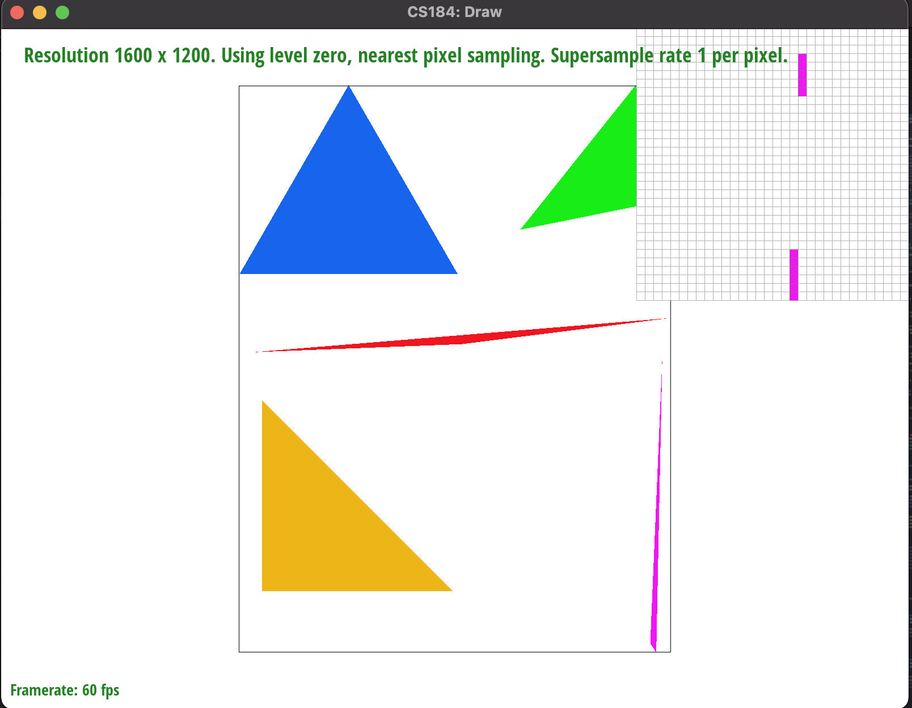
Zoomed in on aliasing of pink triangle.
|
Part 2: Antialiasing triangles
Overview:
In this section, we implemented antialiasing through supersampling. Supersampling is useful because we’re able to take average out colors, creating a smoother gradient in the boundaries of color which gets rid of
jaggies and makes the edges of the images more smooth. To implement supersampling, we needed an intermediate buffer to store our supersamples before we averaged out the colors. Since we’re also sampling from more
points per pixel, we also needed to add two for loops (one for x, one for y). The number of iterations for these two for loops per pixel is the square root of the sampling rate provided. Once we calculate the x, y
coordinates for each super sample, we simply run the same checkInside algorithm to see if the supersamples are in the triangle, and we store the results in the buffer. We also had to make modifications in our
rasterization pipeline, specifically in our set_sample_rate and set_framebuffer_target functions to account for changing the size of our intermediate buffer, and our resolve_to_framebuffer function, where we implemented
downsampling. We downsample by retrieving the supersamples that correspond to a pixel, and coloring the pixel with the averaged out colors of the supersamples. Through this supersampling process, we were able to antialias
our triangles as it creates a smoother gradient of colors instead of sharp color boundaries between pixels.
Issues we encountered:
It was a bit difficult to get started on this task because we really had to understand how the rasterization pipeline works and to really delve into the skeleton code. Once we were able to understand what was happening
though, the main issue we encountered was properly calculating the right fractional distances between each supersample and some type casting errors.
Results:
We were able to implement supersampling, as we can clearly see smoother edges as we increased our sample rate in our basic test svgs. Below are pictures that illustrates the effect of supersampling on basic test 4.
|
Rasterization with a sample rate of 1
|
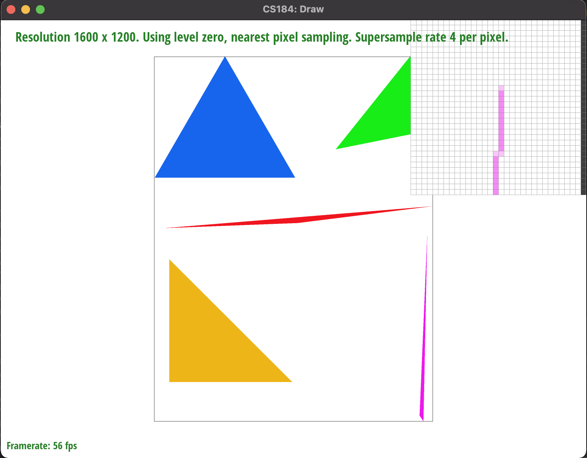
Rasterization with a sample rate of 4
|
|
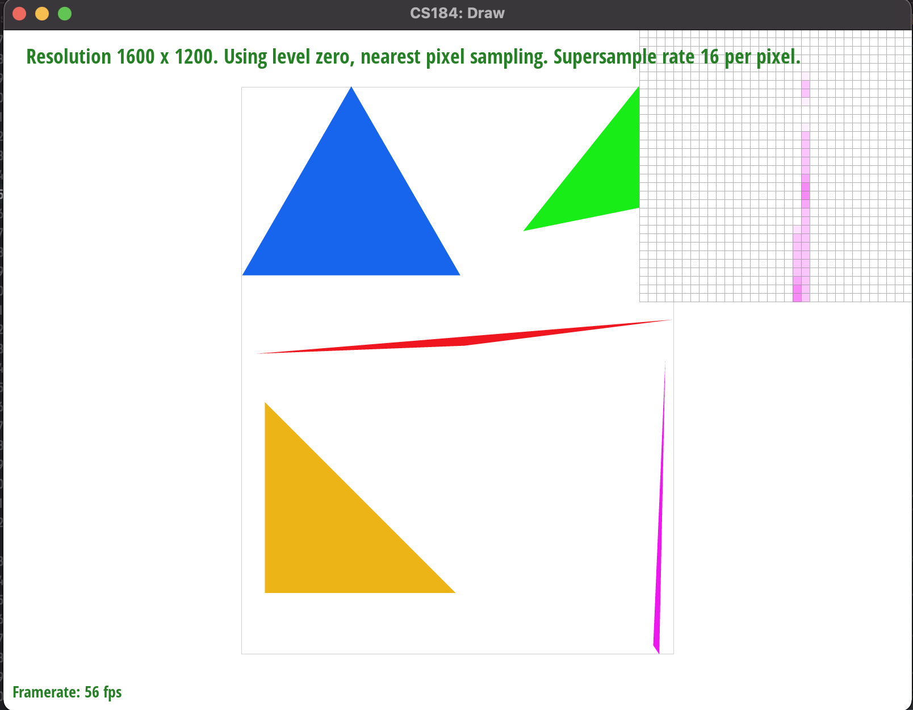
Rasterization with a sample rate of 16
|
Part 3: Transforms
Overview:
This section was fairly straight forward, we simply implemented the right formula for matrix rotation, translation and scaling that was given in lecture.
One thing to note was that we had to convert our degrees to radians for the rotation part. We modified our robot to do wii fit trainer's forward smash attack
from the game Super Smash Bros Ultimate. We did this by adding rotations and translations to the robots legs and changing the color of the robot so that it would
look like th wii fit trainer.
Issues we encountered:
No issues!
Results:
Below is a picture of our new robot!
|
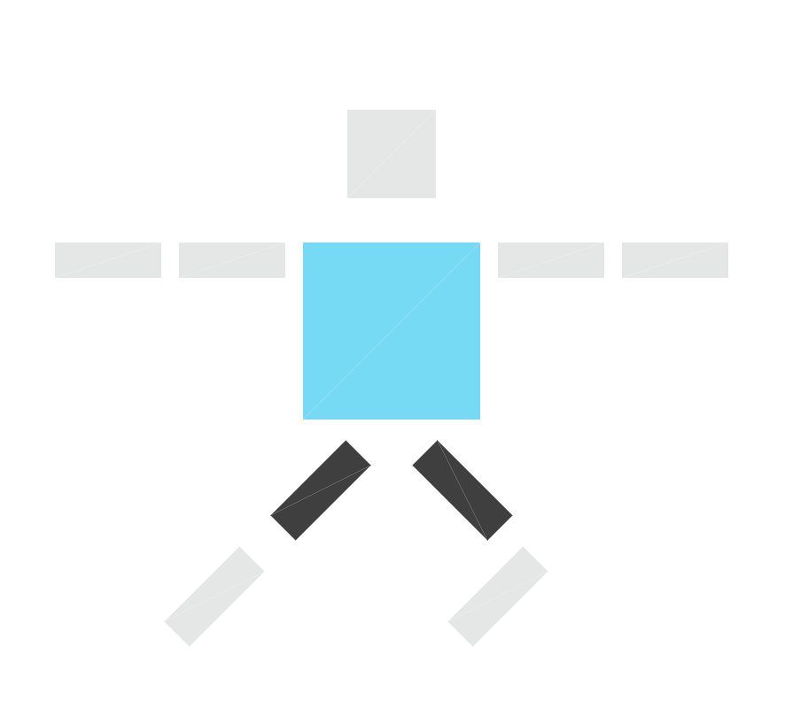
Our robot doing the wii fit trainer pose.
|
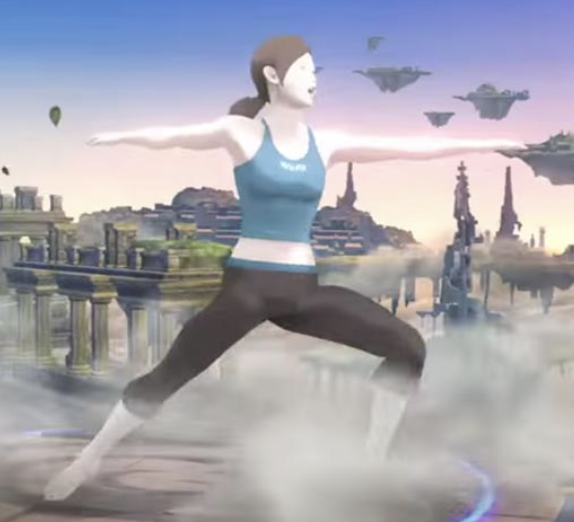
Where we got our inspiration from
|
Section II: Sampling
Part 4: Barycentric coordinates
|
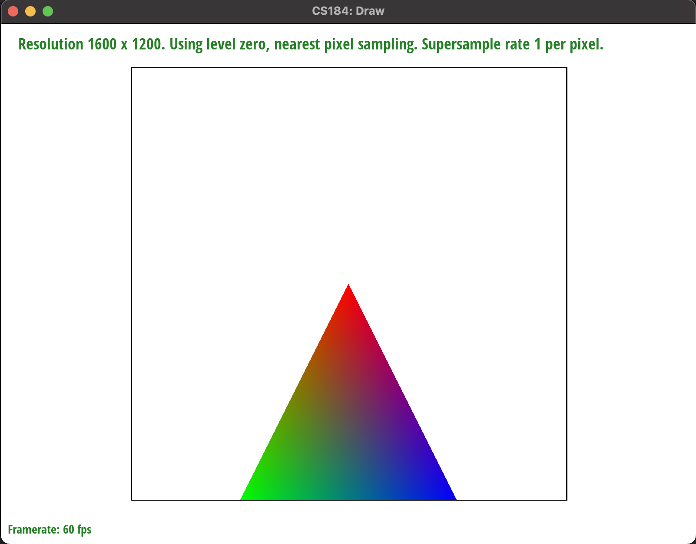
Triangle with RGB vertices
|
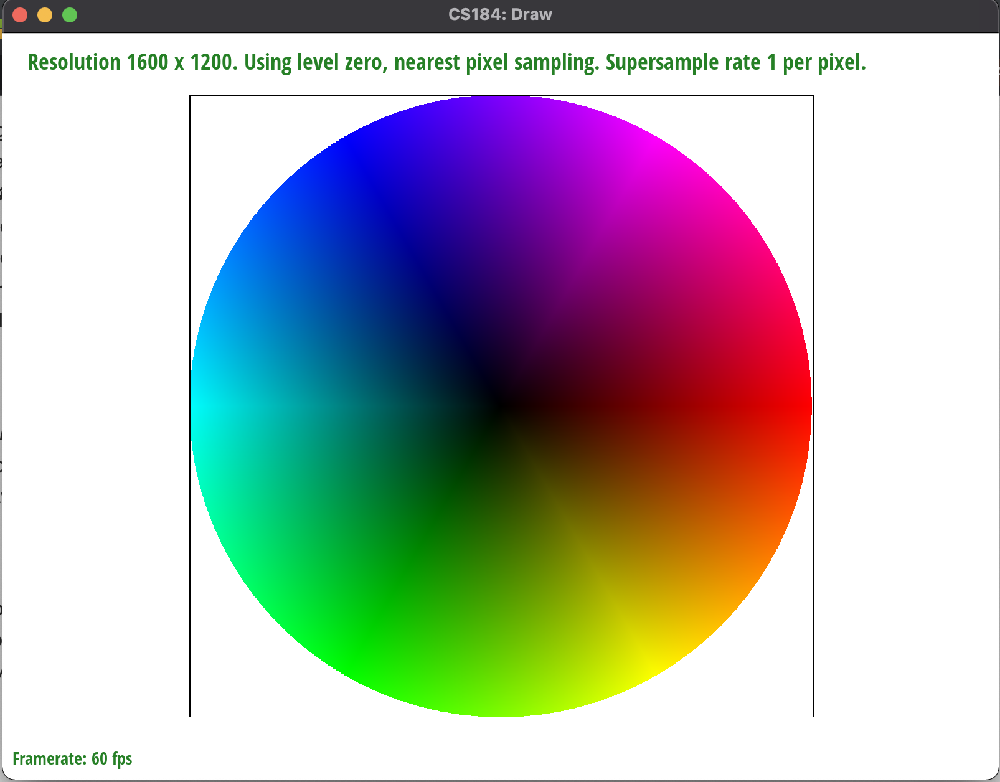
Basic test 7
|
Part 5: "Pixel sampling" for texture mapping
|
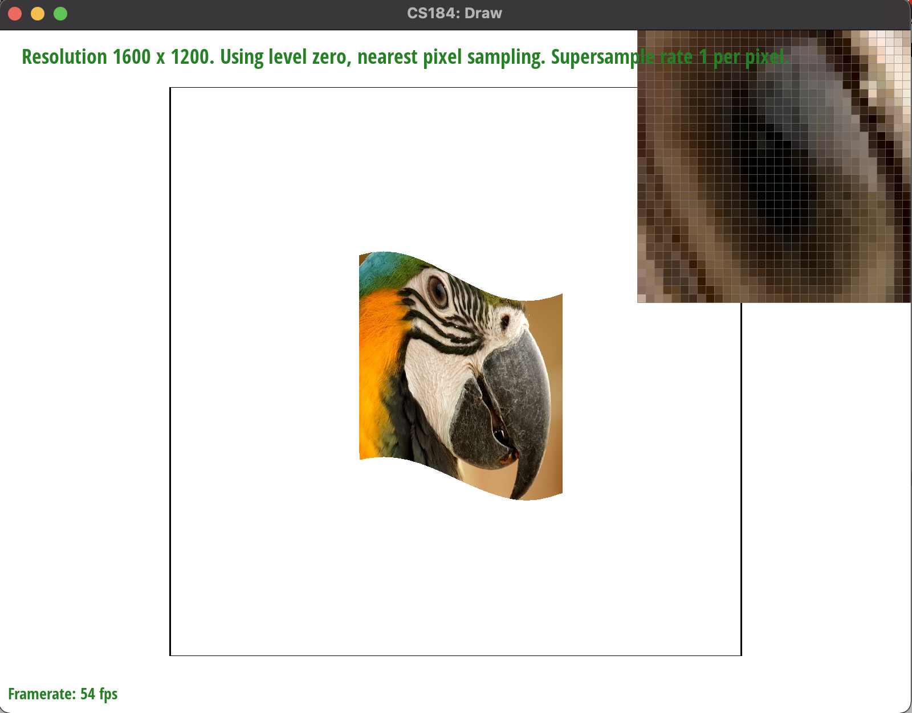
Nearest sampling on parrot's eye
|
Bilinear sampling on parrot's eye
|
|
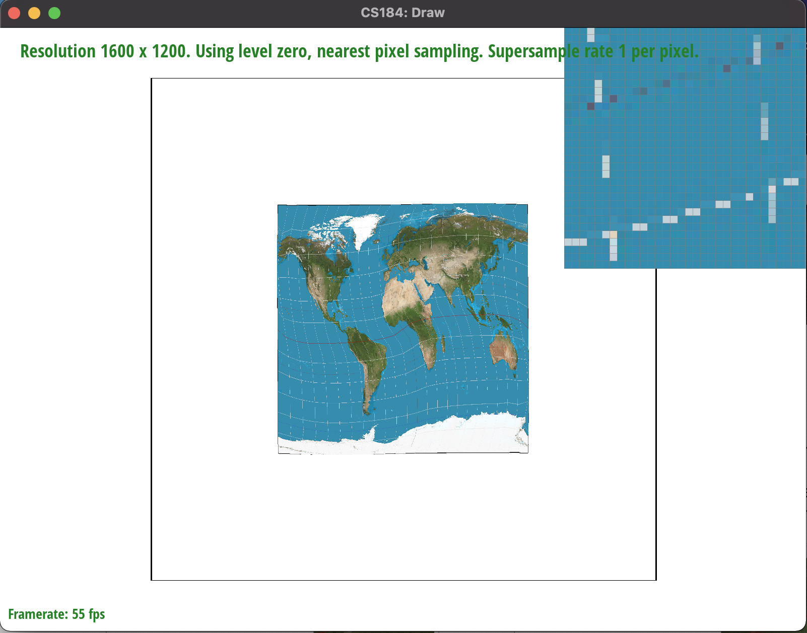
Nearest sampling with sampling rate of 1
|
Bilinear sampling with sampling rate of 1
|
|
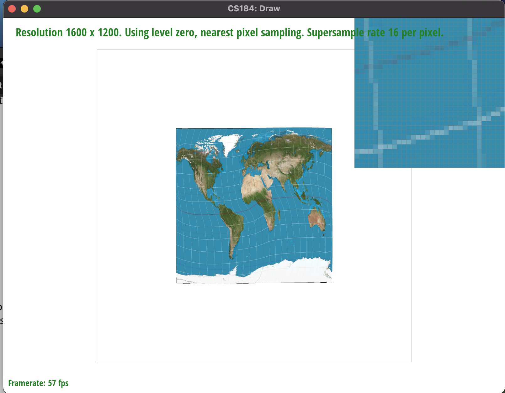
Nearest sampling with sampling rate of 16
|
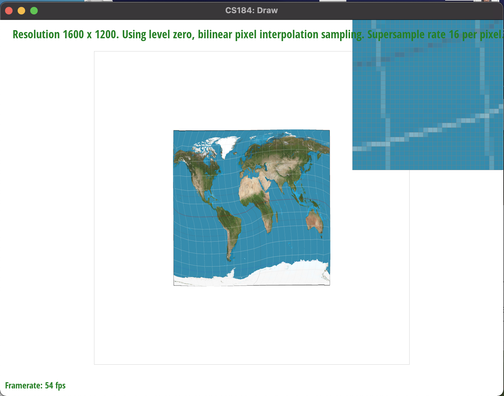
Bilinear sampling with sampling rate of 16
|
Part 6: "Level sampling" with mipmaps for texture mapping
Section III: Art Competition
If you are not participating in the optional art competition, don't worry about this section!
Part 7: Draw something interesting!